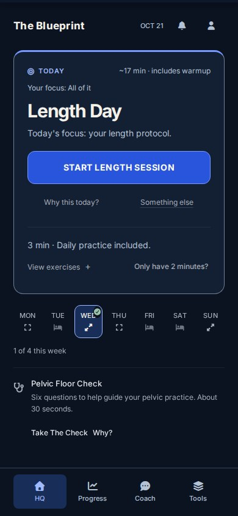
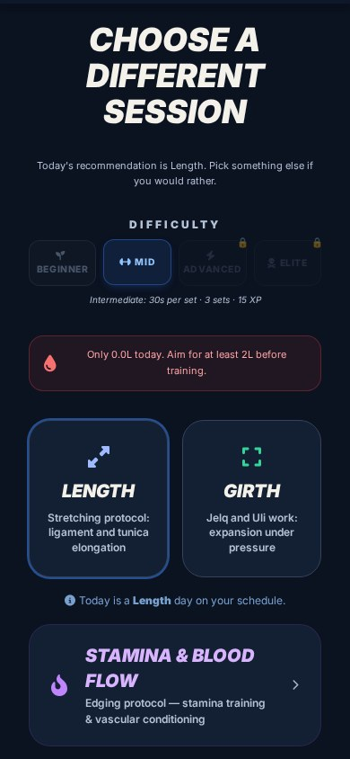
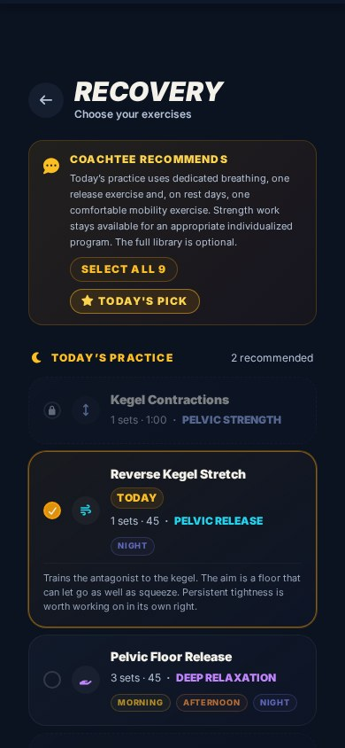

You can have years of experience and still wonder why your erections change,
why you finish sooner than you want, or why control feels different from one
night to the next.
Start with a better question: what's influencing your performance?
Learn the patterns, understand what you can practice, and decide what deserves
attention. Useful answers are free to explore right here.
The daily feature rotates from a curated archive.
New featured does not always mean newly published. For ongoing or sudden symptoms, seek medical advice.
If you have ever thought
One of these is why you are here.
“My erections should be harder.”
“I finish way too fast.”
“I want to last longer without constantly stopping.”
“I want to improve my size, but I don’t know what actually makes sense.”
“My pelvic floor always feels tight.”
“I’ve read forums about penis enlargement, but everybody says something different.”
Recognizing the question is useful.
The next step is understanding what might be contributing to it.
Our free starting-point assessment
helps you choose one concern, two actions to consider, and relevant reading.
Your answers stay in your browser.
The mistake
Most guys start with the wrong thing.
A guy wants a bigger penis, so the first thing he does is search for stretches,
pumps, jelqs, extenders, or whatever technique somebody online swears changed
his life.
There is a bigger picture. Your erection depends on blood getting into the
penis and staying there. Your ejaculation control is driven by arousal,
breathing, nervous system activity, and what your pelvic floor is doing.
And if you decide to experiment with penis training, poor erection quality,
too much tension, bad recovery, and aggressive technique all work against you.
So The Blueprint starts by helping you build a better functioning system.
Then you train from there.
Why one app instead of six
Everything here feeds everything else
Blood flow affects erection quality.
Erection quality affects how full your penis gets.
Pelvic floor tension affects control.
Breathing affects arousal.
Recovery affects performance.
Training volume affects how the tissue responds.
Your habits affect all of it.
Stop treating every sexual problem like it exists
by itself. Train the whole system.
Start without buying anything
Know what you want to improve.
A tip can help you notice something.
A guide can help you understand it. Your next action should match your goal.
01
Find your starting point
Answer five private questions. Get two free actions and relevant guides to explore.
Persistent erection or ejaculation difficulties
can have medical causes. Education helps you ask better questions; it cannot replace evaluation.
What you get
What you train inside The Blueprint.
01
Better blood flow
Daily guidance on the habits that actually support erection quality. Hydration,
movement, sleep, warm-ups, and the foods and supplements that help. You start
paying attention to what changes how hard and full you feel, instead of assuming
your body should perform the same every day.
02
Pelvic floor control
A strong pelvic floor is not the same thing as a constantly clenched one. A lot
of men spend years tightening and never learn how to release. You get both sides:
when to contract, when to relax, how to do reverse kegels, and how to breathe
with the pelvic floor instead of fighting it.
03
Train yourself to last longer
Premature ejaculation is not solved by telling yourself not to finish. You need
something to practice. You get structured edging sessions where you learn to
recognize your arousal before you cross the line, then slow it down, change
rhythm, breathe through it, and release pelvic tension.
Stop letting ejaculation happen to you. Learn to
control when it happens.
04
Length training
A structured approach instead of forums full of random routines. Proper warm-up,
safe erection levels for training, directional stretching, progression, recovery,
consistent measuring, and the warning signs that tell you to back off.
No pulling as hard as possible. No pain equals progress.
Tension is training. Pain is a warning.
05
Girth training
Thickness work uses a completely different stimulus than length work. You get
controlled expansion work, plus how to manage pressure, erection level,
frequency, recovery, and progression. More force is not automatically more
growth. Sometimes it is just more risk.
06
Track what your body is actually doing
Erection quality, morning erections, length, girth, sessions, edging progress,
hydration, pelvic floor work. Over time you see the patterns. Maybe your EQ drops
when you sleep badly. Maybe you are training too often. Maybe your control
improved before your measurements did. Data beats guessing.
Straight answer
“But can you actually make your penis bigger?”
That question is one of the biggest reasons I built this.
There are entire communities of men who practice
manual stretching, pumping, extending, and other forms of penile training, and
who report changes in length and girth over time. There are also plenty of men
who are skeptical.
You should be skeptical. You should not believe
somebody just because they posted a crazy before-and-after. And I am not going
to promise that every man who buys this app gains a specific number of inches.
What I can give you is the structured approach I wish I had when I started.
→ Train gradually
→ Measure consistently
→ Protect erection quality
→ Watch your recovery
→ Pay attention to blood flow
→ Never train through numbness or pain
→ Give your body time to show you how it responds
You are not buying a guaranteed inch. You are
buying the system.
The trade nobody warns you about
Size without function is a bad trade.
A bigger penis with weak erections is not an upgrade. Neither is gaining size while
losing sensitivity, or chasing girth while getting dependent on pills just to stay
hard, or lasting two minutes with more penis than you know how to control.
That is why The Blueprint does not separate size from performance. The goal is to
become a better functioning man sexually: harder erections, better awareness,
more control, better pelvic floor function, better blood flow habits, and if
size training is one of your goals, a smarter way to approach it.
Screenshots
What it looks like on your phone.

Your day, the moment you open it. What today is for, your last
numbers, your water, and one thing the coach wants you to know.

Picking today’s work. Length or girth, at your level. And it
tells you to drink before you train, because dry tissue tears.

Recovery, picked for tonight. The work that fits this time of day
is already chosen, and each one tells you what it is for.
Privacy
Nobody has to know you bought this.
It is an app on your phone. It does not post anything anywhere. There is no
community to join and no group chat where men introduce themselves.
No appointment. No waiting room. No conversation with
anybody who knows your name.
You do the work in your own bathroom, on your own schedule, and the only person
who ever sees your numbers is you.
The one thing it asks for is an honest log. That is the
only place where lying to it costs you anything real.
Reviews
From guys who bought it.
Used with permission, in their
own words. First name and last initial only, because no man should have to put his
full name on a page about this to help another guy out.
“I’ve been doing your manual routines and love how easy
and convenient it is. In 2 months with occasional pumping, I have nearly
gained 1cm in length.”
Rick M.
“My erections have been insanely good since I started doing
the pelvic floor exercises 2 months ago. I’ll be purchasing your Lazy
GymRat app soon. Love your products man, thanks!”
Harry M.
“I gained my first .5 using the length manuals. I like doing
them in the shower and immediately after, while the tissue is
pliable…”
Andrew S.
“I’ve gained both length and thickness since I’ve
been using your app man, and my lady noticed before I did!”
Carlos M.
These are individual
results. They are not an average and they are not a promise. Bodies are different,
some of these men were doing other things at the same time, and no honest version
of this page can tell you what yours will be.
Price
Build your blueprint.
You do not need another folder full of screenshots, 37 Reddit tabs open, or five
different guys giving you five completely different routines. You need somewhere to
train, track, learn, and adjust.
One-time payment
$99
No subscription or recurring charges.
Future app updates included at no extra cost.
→ Train your blood flow
→ Train your pelvic floor
→ Train your control
→ Track your erection quality
→ Explore length and girth training with structure
→ The coach, as many questions as you want
Pay here with Apple Pay, Google Pay or a card. Your card statement
shows a neutral name, not the product.
Checkout could not start, and you have not been charged.
Try again, or email
Therealcoachtee@gmail.com
and a real person will take your order by hand. Include the message
above if there is one.
Trouble getting in, or it is not what you expected? Email
Therealcoachtee@gmail.com
and a real person answers you.